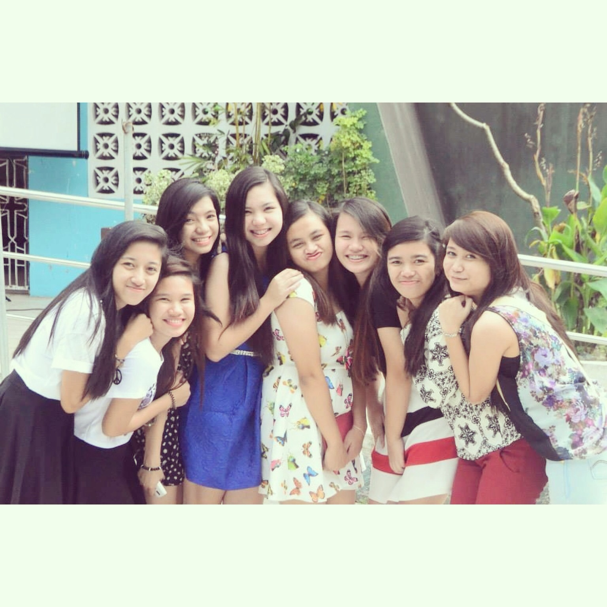

This are my friends. The first picture as you can see, they are my elementary friends. They are also my classmates. We are only eight when I was grade 6, 8 in the class but then always having a clash. But when I remeber those times, I only laugh at it. This picture was taken on our Foundation day. I also that this was also the day that I won in our singing contest in school.  This are my highschool friends. As you can see my face somewhat changed a little bit. My friends name are, Aiko, Michelle, Gellimae, Lj, Jamielyn, and lastly Godlyn. Aiko Kato is the tallest among all of us. she is crrently studying in Lyceum of the Philippines Cavite. Taking up BS Tourism Management. She is a kind and confidently beautiful with a heart. Next is Michelle Mata, she is chubby lady but very beautiful. She is somewhat sensitive but very caring person. Will defend you no matter what. Gellimae Jungco is my friend who is always people pleaser. She is doing what other people told her to do eventhough she doesnt want it. But she is also a kind hearted person. Lj Hilo is currently studying in FEU Manila. SHe is our new friend, because Aiko, Mchelle, Gellimae, Jamielyn, Godlyn and I are friends since 1st year Highschool. We became friends with Lj when we were fourth year highschool. but eventhough she is new, it feels like were friends for a long time. They said that Lj. and I have a little resemblance. but she is bigger than me. Jamielyn Estravila or Green is our joker, sleep is life for her. but then even though she is sleeping in the class, she can answer the questions of our teacher with the help of us. We call her green because her favorite color is green. Last but not the list is Godlyn Mojica. Sadly this girl and jamielyn had a fought and until now they are not okay with each other. Godlyn is our human skeleton because she is very thin. I love my highschool friends very much, because of them I became like this. They influence me in a good way.  This are my college friends. They are the reason why I am still in this program. We are nine in the group. We are always having a year ender. I love them very much because my friends make me happy and sad also. Clash between friends is not new because that experience or event will make your friendship stronger. |
|||||||||
| NEXT |